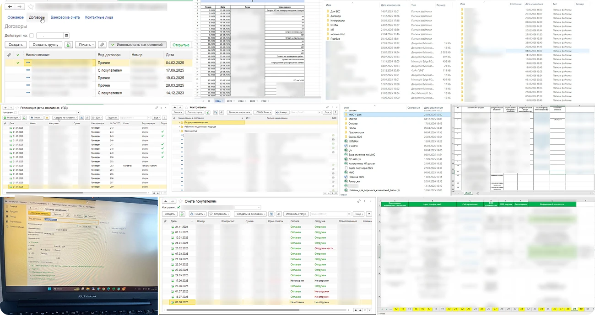
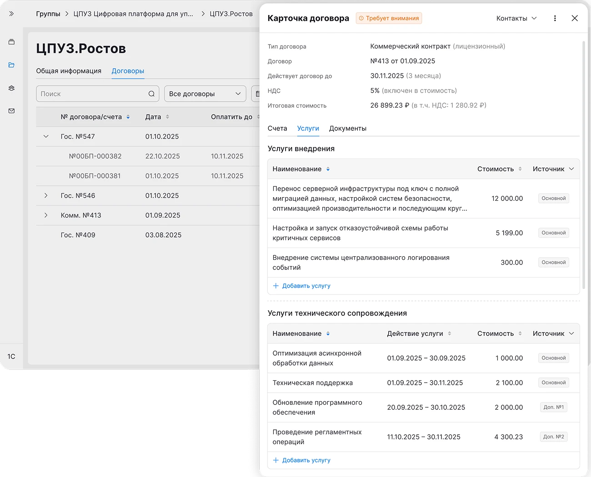
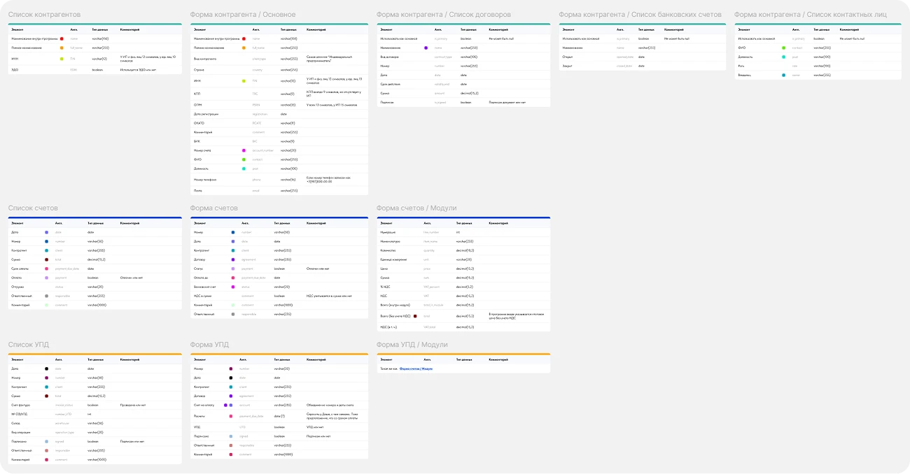
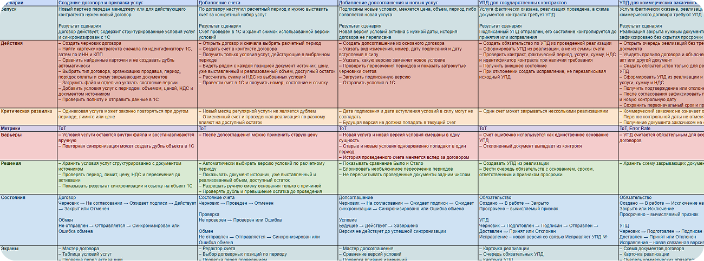
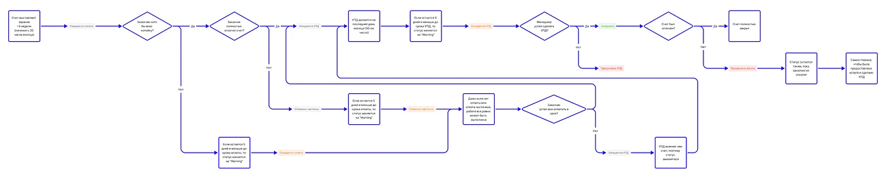
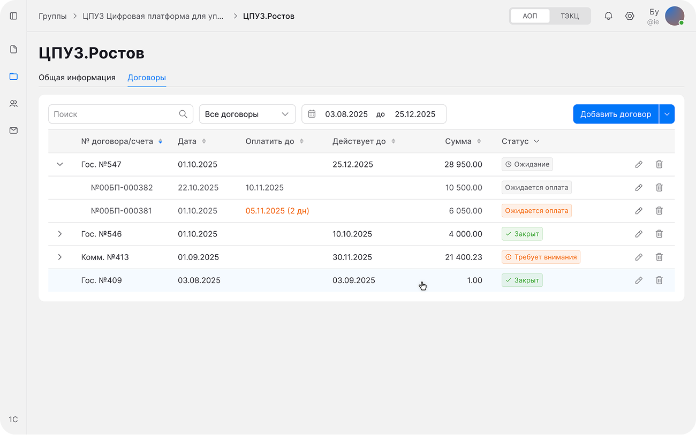
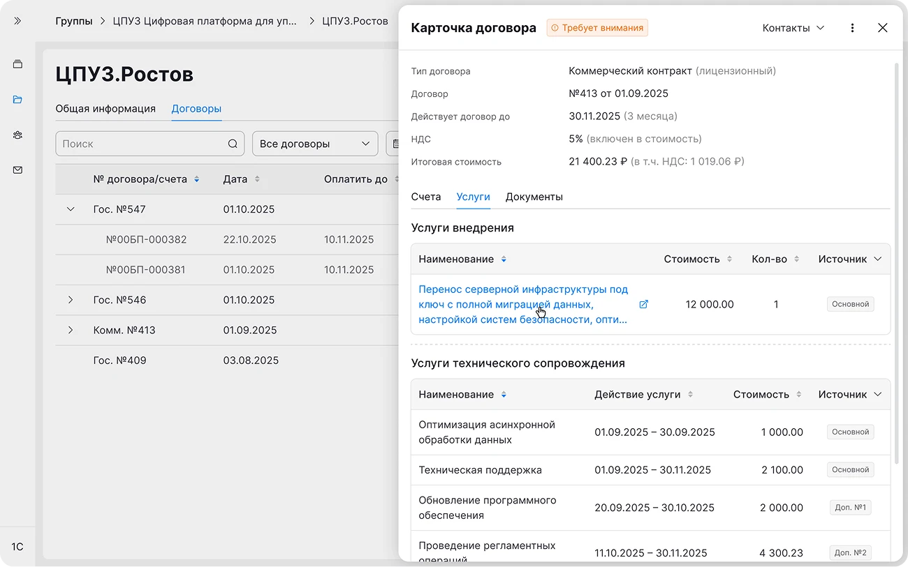
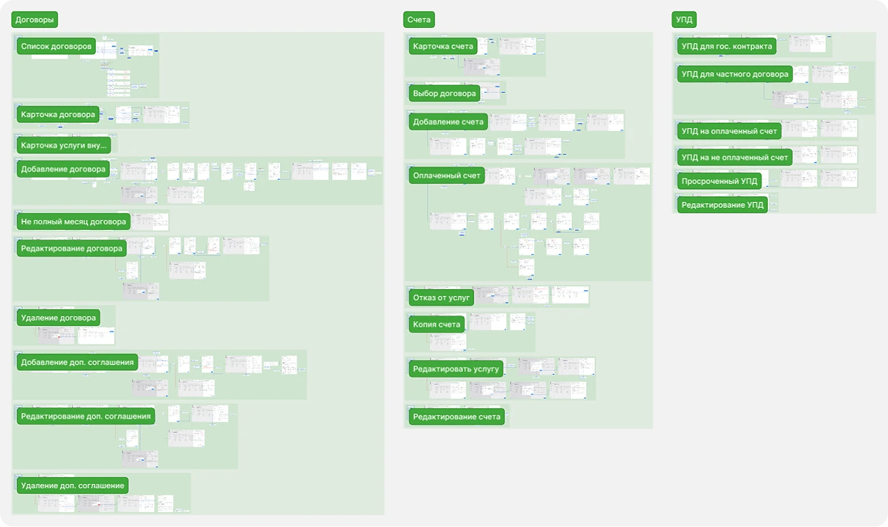

Карточка договора
Как договор перестал быть просто файлом и стал единой точкой работы для менеджера
Как договор перестал быть просто файлом и стал единой точкой работы для менеджера


Менеджеры работали с договорами в разрозненных системах, из-за чего резко возрастал риск ошибок
Создать единый источник данных по договорам, объединяющий учетную систему 1С и корпоративный сайт
Продуктовый дизайнер
Исследовал рабочие сценарии коммерческого отдела и собрал ключевые шаги
По итогам серии глубинок, детализировал проблему. Что выяснилось на самом деле:
Изучил текущую работу с договором в 1С через 1С:Fresh – веб-версию системы и следом собрал data model

Разобрал ключевые сценарии: связь договора со счетами, УПД и доп. соглашениями, а также создание контрагентов и услуг

Отдельно проработал статусную модель и переходы между статусами

Сформулировал job stories, которые охватывали полное взаимодействие с договором
На основе интервью, сценариев и job stories были сформулированы ключевые гипотезы:
Задача: Объединить контекст договоров и счетов на одном экране для быстрой сверки документов
Внедрил вложенную структуру счетов внутри договора и подсветил акцентными цветами критичные даты и статусы без необходимости ручной сверки

Задача: Собрать всю информацию по договору в одном месте, упростить работу с услугами и исключить необходимость хранить рабочие документы локально на ПК
Спроектировал карточку договора с табами (Счета, Контакты, Услуги, Документы), расположив их по частоте использования
В табе «Услуги» перешёл от абстрактных месяцев к точным датам действия и добавил указание источника (основной договор или доп. соглашение) для точного расчёта остатка услуг при выставлении счетов
В табе «Документы» организовал хранение оригиналов, доп. соглашений и вложенных файлов прямо в карточке договора
Задача: Исключить риск просрочек и юридических ошибок по гос. контрактам из-за того, что менеджер выставляет счёт, но забывает сформировать УПД
Спроектировал 3-шаговый мастер создания счёта, где для гос. контрактов этап генерации УПД зафиксирован как обязательный
Настроил сквозную связку документов, теперь из карточки счёта можно в один клик перейти в связанный УПД или договор
Задача: Автоматизировать учёт выполненных услуг по договорам и доп. соглашениям без риска дублирования счетов
Внедрил таблицу выбора услуг с учётом периодов оказания и источников. Автоматический пересчёт итоговой суммы и ограничение повторного выбора

Задача: Автоматизировать контроль закрывающих документов и исключить просрочки по УПД после оплаты счёта
Внедрил динамическую систему статусов УПД с цветовыми акцентами для разных стадий
(Ожидается → Горит срок → Просрочен)
Добавил обратный отсчёт дней до дедлайна и вынес быструю генерацию УПД прямо в карточку счёта, позволяя закрыть задачу в один клик
Итоговый вид всех сценариев

Продукт готовится к разработке. Для оценки успешности решения на продакшене совместно с PM мы зафиксировали целевые метрики, на которые будем опираться после релиза: ASAT, Error Rate и ToT
Планируем увеличить скорость работы с договором на 40% (ToT). Благодаря навигации по табам и автоподтягиванию данных, менеджеры перестанут тратить время на постоянное переключение между 1С, корпоративным сайтом и локальными папками
Рассчитываем снизить количество ошибок на 17% (Error Rate). Автозаполнение избавит от ручного ввода реквизитов, а умные напоминания про УПД помогут вовремя оформлять документы и снизят риск финансовых потерь